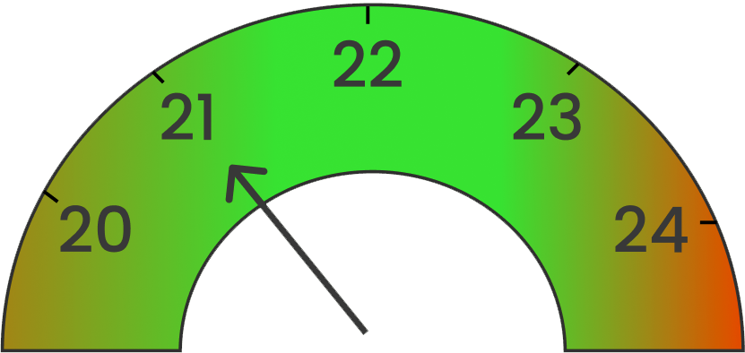
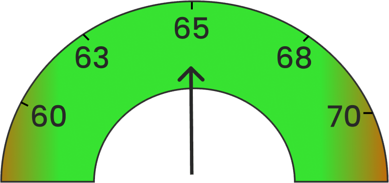
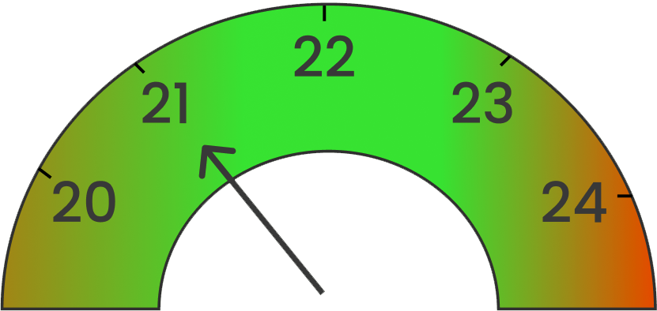
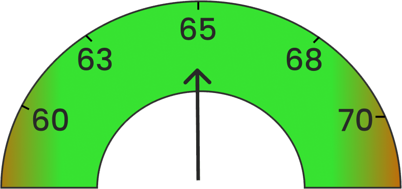

Filtrar: Galpão 1 Galpão 2 Galpão 3 Empresa: Sadia - Galpão 1 Gráfico em barras de temperatura e umidade - dia 05/05 Pico de temperatura: 15:00h Pico de Umidade: 17:00h Media Temperatura  Media Umidade  Gráfico em barras de temperatura e umidade - dia 05/05 Média de temperatura nos últimos 7 dias 4% mais quente que na semana anterior Média de Umidade nos últimos 7 dias 6% mais úmido que na semana anterior
Gráfico em barras de temperatura e umidade - dia 05/05 Pico de temperatura: 15:00h Pico de Umidade: 17:00h Media Temperatura  Media Umidade  Gráfico em barras de temperatura e umidade - dia 05/05